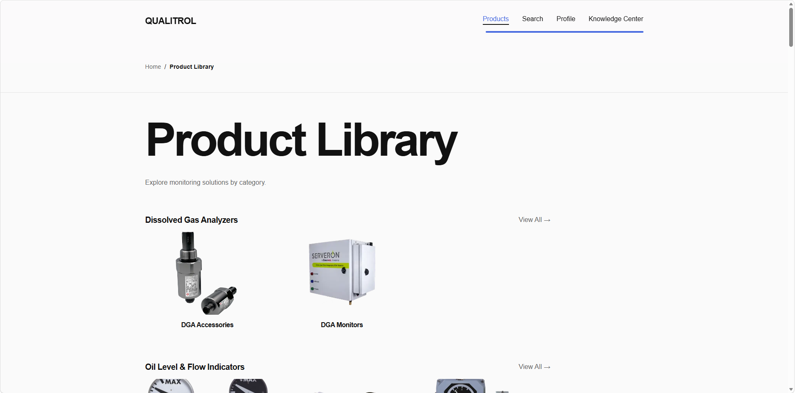
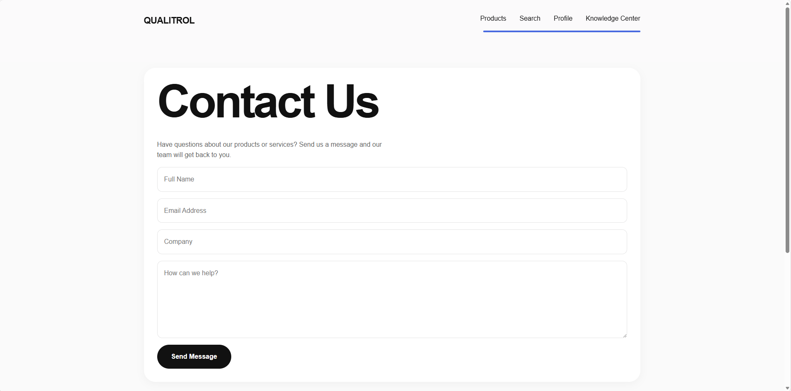
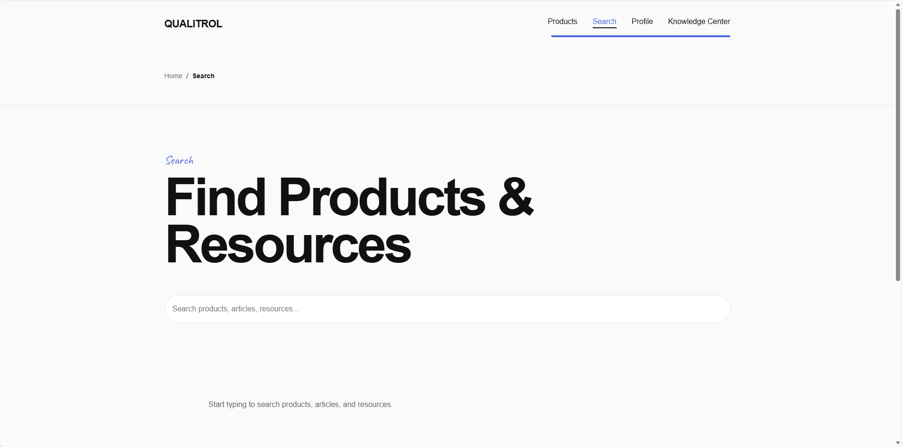

Overview
This case study walks through research, wireframing, and visual screens produced during a full redesign. The final mockups and interactive demo demonstrate accessible layouts, clear CTAs, and consistent visual language across breakpoints.
Problem
Users struggled to find specific products quickly; the product pages were cluttered and the checkout flow had a high abandonment rate.
My Role
Created the UX and visual design—conducted competitor analysis, created wireframes, designed high fidelity screens, and produced the prototype used for usability testing.
Tools
Figma • Adobe Photoshop • Illustrator • HTML/CSS • InVision
Process
Started with research and sketches, moved to low fidelity wireframes to explore layout changes, then iterated through high fidelity screens and responsive mockups.
Outcome
The redesign produced clearer navigation, a simplified checkout path, and a modern visual treatment reflected in the final mockups and interactive demo.
Wireframes


Screens & Mockups










Final Mockups & Demo